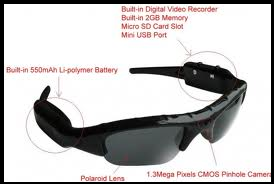

J & S Glasses
John and Sean glasses (also known as J.S. Glasses) – Revolutionary glasses, aside from greatly improving your eyesight, these glasses have two built in cameras in order to comprehend depth and perception and a brain-controlled computer to operate the system. These next generation glasses provide the user with never before seen technology.
The main purpose of our product is what separates them from the competition. The original idea inherited characteristics from google translate and revolved around physical text translation rather than solely virtual. The way that our product works is that the right camera lens can read information from any object. That information could be text, numbers or symbols. After storing the information on the Central Processing Unit the glasses can then translate, compute mathematical sums and identify symbols.
Normally with high tech products like ours people may think that there are damage risks involved. However with our glasses which is coated polyurethane which makes them fire-retardant and also highly resistant to breakage.
The target market for this product would generally be younger people that are in need of/want a high-tech pair of glasses. However that doesn’t restrict people of any age purchasing and using these glasses. This gives us a wide target market.
So you might be thinking to yourself, what makes these glasses any different than the smart phone in my pocket or my iPad, well like we said, they offer a new virtual world powered by your brain.